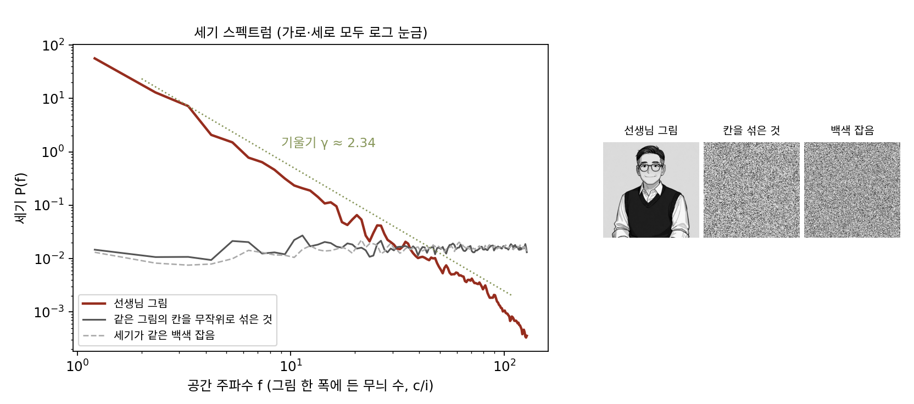

세기 스펙트럼: 그림의 세기는 굵은 무늬에 몰려 있다
선생님 그림은 큰 계수 1%에 세기의 90%가 몰렸다. 왜 하필 몰렸을까? 그림의 칸들을 무작위로 섞어 보자. 칸마다의 밝기 값 모음은 하나도 바뀌지 않으니 세기도 같다. 그런데 섞은 그림은 큰 계수 1%가 세기의 8.5%만 가진다. 몰리는 까닭은 밝기 값이 아니라 칸들이 놓인 짜임에 있다. 짜임의 어떤 성질일까?
역사: 영국과 그리스의 풍경 여섯 장
필드(David Field)는 눈의 시각 세포가 왜 그런 모양의 무늬에 반응하는지를 묻다가, 먼저 눈이 받는 그림이 어떤 통계를 가지는지 쟀다. 1987년 논문에서 그는 영국과 그리스에서 나무·바위·덤불을 흑백 필름으로 찍은 사진 여섯 장(건물이나 길이 없는 장면)을 256 × 256 칸으로 읽어 무늬의 진폭을 공간 주파수마다 쟀다. 겉보기에는 제각각인 여섯 장이 모두 같은 모양을 냈다. 무늬의 진폭이 대략 공간 주파수에 반비례했고, 세기(진폭의 제곱)는 공간 주파수의 제곱에 반비례했다.
공간 주파수마다 세기를 재기
선생님 그림의 2차원 푸리에 계수를 공간 주파수 f 가 같은 고리끼리 모아 계수 크기의 제곱을 평균 낸다. 2 c/i 에서 12.9이던 값이 8 c/i 에서 0.46, 32 c/i 에서 0.015, 127 c/i 에서 0.00036 이 된다. 공간 주파수가 4배가 될 때마다 20~30분의 1로 준다. 가로·세로를 모두 로그 눈금으로 그리면 거의 곧은 내리막이고, 그 기울기는 −2.34 다.
이렇게 공간 주파수마다 무늬의 세기를 늘어놓은 것을 세기 스펙트럼 (공간 주파수마다의 무늬 세기 / power spectrum)이라 한다. 기울기 γ(감마)는 그림마다 조금씩 다르다. 등장인물 그림 70장은 2.24 ± 0.16 이고, CelebA 얼굴 사진 2,000장(64 × 64 흑백)은 2.86 ± 0.28 이다. 같은 세기의 백색 잡음(칸마다 따로 뽑은 잡음)은 0.08, 칸을 섞은 선생님 그림은 0.01 로 평평하다. 그림이 굵은 무늬에 세기를 몰아주는 까닭은 경계에 있다. 밝기가 한 번에 뛰는 경계 하나는 진폭이 공간 주파수에 반비례하는 무늬들의 합이고, 그림은 크고 작은 덩어리의 경계로 가득하다.

ML에서: 학습 데이터가 가진 기울기
생성 모델이 흉내 내야 할 그림들은 모두 이 내리막을 가진다. 픽셀 수로만 보면 백색 잡음 한 장과 그림 한 장은 같은 크기의 점이지만, 세기 스펙트럼으로 보면 한쪽은 평평하고 한쪽은 기울기 2쯤으로 내려간다. 생성한 그림의 세기 스펙트럼을 재면 모델이 어느 공간 주파수의 무늬를 덜 그렸는지 숫자로 볼 수 있다.
문제 7. 메신저로 보낸 사진
가로 4,000픽셀 사진을 메신저가 가로 1,000픽셀로 줄여 보냈다. 이 사진의 무늬는 1 c/i 부터 2,000 c/i(두 픽셀이 한 주기)까지 있고, 공간 주파수가 두 배가 되는 구간(옥타브)마다 세기가 같다고 하자. (가) 줄인 사진에서 사라진 무늬는 몇 c/i 위인가? (나) 잃은 세기는 전체의 몇 %인가? (다) 가로 1,080픽셀 휴대폰 화면에서 줄인 사진이 원본과 거의 같아 보이는 까닭은?

가로세로를 4분의 1로 줄였으니 칸 수는 16분의 1이에요. 세기도 그만큼 잃은 거 아니에요?

사라진 무늬가 어느 구간인지부터 봐요.
1,000픽셀이면 500 c/i 까지 담기니까, 사라진 건 500부터 2,000 c/i, 두 옥타브예요. 1부터 2,000까지는 log₂2,000 = 11 옥타브쯤이니까 2/11, 18%네요.

칸 수는 16분의 1이 됐는데 세기는 18%만 잃었어. 칸 수를 많이 차지하는 쪽이 가는 무늬라서 그런가 봐.

(다)는 화면이 가로 1,080픽셀이면 원본도 어차피 540 c/i 까지만 보여 주니까, 잃은 두 옥타브는 화면에서 원래 안 보이던 무늬네요.
문제 8. 옥타브마다 같은 세기
2차원 그림의 세기 스펙트럼이 정확히 P(f) = f⁻² 라 하자. (가) 공간 주파수가 a 와 2a 사이인 고리에 든 세기를 구하라(반지름 f, 두께 df 인 고리의 넓이는 2πf df). a 에 따라 달라지는가? (나) 소리처럼 1차원이면(고리 대신 길이 df 인 선분) 어떻게 되는가? (다) 선생님 그림처럼 γ = 2.34 이면 한 옥타브 올라갈 때마다 세기가 몇 배가 되는가? 실제로 잰 옥타브 [2, 4), [4, 8), …, [64, 128) 의 몫 12.2, 12.3, 7.5, 4.9, 4.4, 3.0% 와 견주어라.
f⁻² 로 빠르게 주니까 위 옥타브일수록 세기가 줄겠죠.
고리의 넓이도 함께 넣어 봐요.

∫ f⁻² · 2πf df = 2π ∫ df/f 를 a 부터 2a 까지 하면 2π ln 2 = 4.36 이에요. a 가 없어요. 어느 옥타브나 같아요.

고리가 바깥으로 갈수록 넓어지는 몫 f 가, 세기가 줄어드는 몫 f⁻² 의 절반을 메운 거예요. 가는 무늬는 하나하나는 약해도 개수가 많아요. 문제 7에서 옥타브마다 세기가 같다고 한 가정이 이거였구나.

(나)는요?
선분이면 ∫ f⁻² df = 1/(2a) 라 옥타브마다 절반으로 줄어요. 같은 f⁻² 라도 차원에 따라 이야기가 달라지네요.

(다)는 세기가 f⁻²·³⁴ 이고 넓이가 f 니까 옥타브마다 2^(2 − 2.34) = 0.79배예요. 잰 값은 12.2% 에서 3.0% 까지 다섯 번 넘어가니 한 번에 (3.0/12.2)^(1/5) = 0.76배고요. 꽤 맞네요.

필드도 1987년 논문에 「세기가 1/f² 로 줄면 옥타브마다 같은 세기」라고 적었어요.
동네 가게는 하나하나 작아도 수가 많아서 매출을 다 더하면 큰 마트와 맞먹는 거랑 같네요.
문제 9. 제곱 오차로 줄인 조각
8 × 8 조각(수 64개)을 수 8개로 줄였다 되살리는 활성화 없는 오토인코더를 제곱 오차로 학습시키면, 주성분 8개만 남기고 되살린 것과 같은 결과가 된다. 등장인물 그림 조각 42,000개에서 이렇게 하면 조각 분산의 92.0%가 남는다. (가) 남은 세기를 DCT 무늬 번호 (u, v) 의 반지름 √(u² + v²) 구간 [0, 1.5), [1.5, 3), [3, 5), [5, 11) 으로 나누면, 각 구간에서 원래 세기의 몇 %가 남는가? (나) 되살린 조각은 어떻게 보이는가? (다) VAE 로 되살린 얼굴에서 가는 무늬가 14.5%만 남은 것과 견주어라.
전체가 92% 남았으니 무늬마다 고르게 92%쯤 남았겠죠.
주성분 축을 무엇의 순서로 골랐는지 생각해 봐요.
분산이 큰 순서요. 그런데 문제 6에서 주성분 축이 거의 DCT 축이었고, DCT 축마다의 분산은 그 공간 주파수의 세기예요. 세기는 굵은 무늬일수록 크니까…

돌려 보니 [0, 1.5) 는 100%, [1.5, 3) 은 76.5%, [3, 5) 는 20.2%, [5, 11) 은 0.6%예요. 고르게가 아니라 굵은 무늬부터 남기고 가는 무늬는 거의 다 버렸어요.

(나)는 흐린 조각이네. 제곱 오차로 수 몇 개만 남기라고 하면, 세기가 큰 굵은 무늬를 남기는 게 오차를 가장 많이 줄이니까 그렇게 고른 거야. 세기 스펙트럼이 내리막인 한 이건 블러랑 같은 일이야.
(다)는요?
VAE 는 비선형이고 손실에 KL 도 있지만, 되살리기 몫은 같은 제곱 오차예요. 64 × 64 컬러 사진 12,288개의 수를 잠재 변수 64칸으로 줄였으니 남길 수 있는 무늬는 더 적고, 세기가 작은 가는 무늬부터 버렸겠네요. 14.5%가 그 흔적이고요.
시험 전날 요약 노트를 한 장으로 줄이라고 하면 배점 큰 단원부터 남기고 각주는 다 버리는 거랑 같네요.